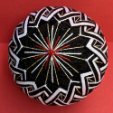
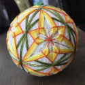
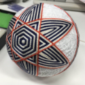
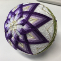
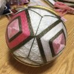
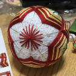
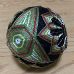

奥山 蛸之助のてまり
| 2025年10月29日 | 手毬のてまり |

|
|---|---|---|
| 2025年10月04日 | ゴッホのてまり |

|
| 2025年06月20日 | ミャクミャクのてまり |

|
| 2025年06月01日 | プロメアのてまり | |
| 2024年06月09日 | 芦屋道満のてまり | |
| 2024年04月13日 | ジョーカーのてまり |  |
| 2023年01月28日 | ゴールデンカムイのてまりver2 | |
| 2022年05月18日 | ゴールデンカムイのてまりver1 | |
| 2022年05月14日 | ひなまつりのてまり | |
| 2022年09月16日 | BBちゃんのてまり(環つなぎの桜) | |
| 2022年01月24日 | 間桐桜のてまり(環つなぎの梅) | |
| 2021年05月05日 | キルラキル古典菊 | |
| 2021年02月24日 | 古典菊(赤) | |
| 2021年02月24日 | モノクロ古典菊 | |
| 2020年09月25日 | 古典菊 | |
| 2020年09月11日 | 鬼滅のてまり |

|
| 2020年07月21日 | 水仙 |  |
| 2020年06月22日 | 鉄線花 | |
| 2020年04月12日 | 環つなぎの夜桜 | |
| 2019年10月10日 | ダイパつむ型 | |
| 2019年08月06日 | 透明なてまり(市松模様) | |
| 2019年05月02日 | 一重桜 | |
| 2019年04月23日 | 三つ重ねつむ型 |  |
| 2019年04月17日 | 八重菊 |  |
| 2019年04月11日 | つむ型クロス | |
| 2019年03月31日 | 八重咲きの桃 |

|
| 2019年03月25日 | ますかがり |  |
| 2019年03月19日 | 環つなぎの梅 |  |
| 2019年03月12日 | 三羽根亀甲 |  |